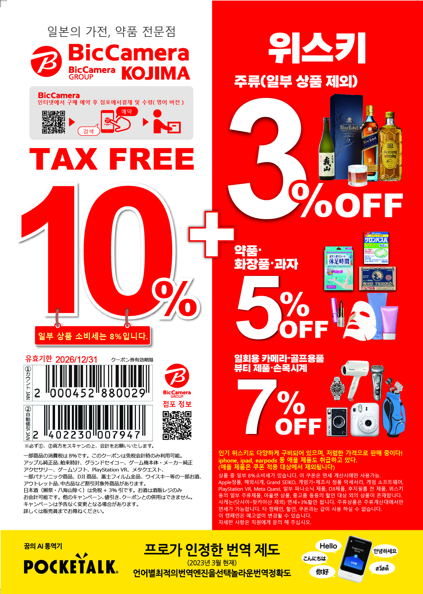

4인 총 1,616,400원
4박 총 1,016,080원 (60만원 절감!)
시부야스카이(3일차 12/3 목 → 4일차 백업)
Visit Japan Web·eSIM
✈️ 항공편 (에어로케이 확정 E-Ticket · 12/1 화 ~ 12/5 토)
특가 재발권 완료 (총 1,616,400원)| 예약번호 | 탑승객 성명 (전자항공권 번호) | 출국 (12/1 화 07:25) 수하물 | 귀국 (12/5 토 18:55) 수하물 | 결제 내역 |
|---|---|---|---|---|
| AARL3T | 최성우 (SUNGWOO CHOI · 7112323833434) 유태현 (TAEHYEON YU · 7112323833433) |
위탁 각 15kg (총 30kg) 특가운임 51,000원 + 세금 |
위탁 각 15kg (총 30kg) 운임 119,000원 + 세금 |
1인 414,600원 합계 829,200원 |
| PJ422B | 최수민 (SUMIN CHOI · 7112323833454) | 위탁 0kg (기내 10kg 무료) 초특가운임 30,000원 + 세금 |
위탁 15kg 운임 119,000원 + 세금 |
393,600원 |
| D6238P | 최민혁 (MINHYEOK CHOI · 7112323832417) | 위탁 0kg (기내 10kg 무료) 초특가운임 30,000원 + 세금 |
위탁 15kg 운임 119,000원 + 세금 |
393,600원 |
1. 추가 특가 재결제 완료 (총 1,616,400원): 최성우·유태현 님 출국편을 51,000원 특가(위탁 15kg×2 포함)로, 최수민 님 출국편을 30,000원 초특가로 재결제하여 38,000원을 추가 절감했습니다!
2. 출국 vs 귀국 수하물 전략: 갈 때는 짐이 가벼우므로 위탁 캐리어 2개(최성우·유태현 님 명의 각 15kg, 총 30kg) + 기내 캐리어/가방 4개(각 10kg, 총 40kg)로 충분하며, 쇼핑으로 짐이 늘어나는 귀국편(12/5 토 18:55)은 4명 전원 위탁 15kg(총 60kg)이 모두 포함되어 있어 걱정 없이 쇼핑하실 수 있습니다!
🏠 확정 숙소 (아사쿠사 Aima Asakusa East · 침대 3개+소파 · 역 도보 4분)
에어비앤비 예약 완료 (HMDEENA4EC · ₩1,016,080)역까지 4분｜게스트 6명｜더블 침대 2개+싱글 침대 1개+소파｜아사쿠사 (Aima Asakusa East)
- 체크인: 2026년 12월 1일 (화) 오후 4:00 (16:00) 이후
- 체크아웃: 2026년 12월 5일 (토) 오전 11:00까지 (기존 10:00보다 1시간 더 여유로운 11:00 체크아웃!)
- 🧳 체크인·체크아웃 당일 무료 캐리어 보관 혜택: 체크인 날(12/1 화) 입실 전 & 체크아웃 날(12/5 토) 퇴실 후 모두 숙소에서 무료로 캐리어를 보관할 수 있습니다! 코인락커 비용(약 3,000~4,000엔)을 아끼는 것은 물론, 1일차 도착 직후와 5일차 마지막 날(아사쿠사·우에노 관광)에 무거운 짐 없이 두 손 가볍게 다닐 수 있습니다!
- 침대 구성 (최대 6인 수용): 더블 침대 2개 + 싱글 침대 1개 + 소파 — 4인 가족이 바닥 요나 소파베드를 펼 필요 없이 정식 침대 3개(더블 2 + 싱글 1)에서 훨씬 넓고 쾌적하게 숙면 가능!
- 호스트: Aima Asakusa East 님 (연락처: +81 90-7646-6117)
- 결제 금액: ₩1,016,080 (4박 완납 · 예약자: Sungwoo Choi · 이전 숙소 대비 약 60만 4천 원 절감!)
- 압도적인 초역세권 & 아사쿠사·스카이트리 도보권 입지:
- 혼조아즈마바시역 (도영 아사쿠사선 A19): 숙소에서 도보 3~4분 (280m)! 나리타공항에서 게이세이 스카이액세스 특급(환승 0회 직통, 약 53분)으로 바로 도착!
- 아사쿠사역 (도쿄메트로 긴자선 G19 시발역 / 아사쿠사선 A18): 스미다강 아즈마바시 다리만 건너면 도보 5~6분 (450m)! 긴자선 시발역(출발역)이라 우에노·긴자·오모테산도·시부야 갈 때 4인 가족 전원 100% 빈자리에 앉아서 이동 가능!
- 아사쿠사 센소지·카미나리몬·나카미세 거리 & 스시로 아사쿠사 아즈마바시점: 숙소에서 도보 4~7분! (마지막 날 무료 짐보관 후 도보로 여유롭게 정복!)
- 도쿄 스카이트리 & 소라마치 쇼핑몰(포켓몬센터·점프샵·디즈니씨 직통버스 정류장): 숙소에서 도보 12분 (또는 1정거장 2분)! 골목만 나와도 눈앞에 거대한 스카이트리가 보입니다!
🔑 에어비앤비 체크인 · 무료 짐보관 & 일본 숙박자 명부(여권) 사전 안내
- 예약 코드: HMDEENA4EC · 호스트: Aima Asakusa East 님 (+81 90-7646-6117)
- 체크인/아웃 시간: 체크인 12/1(화) 16:00 이후 / 체크아웃 12/5(토) 11:00까지
- 🧳 체크인(12/1) & 체크아웃(12/5) 당일 무료 캐리어 보관 활용법:
• 1일차(12/1 화): 나리타공항에서 스카이액세스 특급(53분 직통)으로 11:40경 숙소에 도착해 무료로 캐리어를 보관한 뒤 가벼운 몸으로 도쿄역·긴자를 다녀옵니다!
• 5일차(12/5 토): 아침 체크아웃 후 숙소에 무료로 캐리어를 맡겨두고 바로 옆 아사쿠사(센소지·나카미세·스시로)와 우에노(아메요코 시장·공원)를 편하게 구경한 뒤 공항으로 출발합니다! - 사전 투숙객 등록 및 출입 안내: 에어비앤비 메시지함을 통해 호스트(Aima Asakusa East 님)가 보내주는 온라인 숙박자 명부(여권 정보) 등록 링크, 짐 보관 장소 안내 및 셀프 체크인 가이드를 출발 전에 꼭 확인하고 스크린샷으로 저장해 두세요!
🥩 숙소(아즈마바시 1-15-10)에서 도보 3~12분! 와규 홈파티용 마트 & 백화점 식품관 3곳
아사쿠사 숙소 주변에는 걸어서 3~12분 거리에 백화점 지하 프리미엄 정육 코너(마츠야 아사쿠사), 도쿄 스카이트리 소라마치 식품관, 현지인 대형 슈퍼마켓(라이프·오오제키·마이바스켓)까지 완벽하게 갖춰져 있습니다!
1. 마츠야 아사쿠사 백화점 지하 1층 식품관 (Matsuya Asakusa B1F)
아사쿠사역과 바로 연결된 전통 백화점 지하 식품관(데파치카 · 10:00~20:00 영업)입니다.
- 최상급 A5 흑모와규 등심·갈비살·부채살 정육 코너와 신선한 참치/연어 사시미, 초밥, 반찬, 과일(딸기), 고급 디저트가 가득합니다!
- 꿀팁: 저녁 18:30~19:00 이후에 방문하면 백화점 퀄리티의 와규 도시락·사시미·초밥을 20~50% 마감 할인으로 득템할 수 있습니다!
2. 라이프(LIFE) 스미다 나리히라점 & 스카이트리 소라마치 식품관
도쿄 스카이트리 바로 옆에 위치한 대형 슈퍼마켓 라이프(09:30~24:00)와 소라마치 1~2층 식품관(Food Marche)입니다.
- 라이프(LIFE) 마트: 밤 12시까지 영업하며 구이용 흑모와규, 생와사비, 야키니쿠 소스, 즉석밥, 하이볼/맥주/메론소다, 과자류가 매우 저렴합니다!
- 소라마치 2층 정육관 (니쿠노 우와지마야 / 즈이운): 마블링이 예술인 명품 흑모와규 스테이크용 고기를 부위별로 판매합니다.
3. 마이바스켓 아즈마바시점(도보 3분) · 오오제키 · 돈키호테 아사쿠사
아침 식사거리와 야식, 면세 쇼핑까지 숙소 근처에서 모두 해결할 수 있습니다.
- 마이바스켓 혼조아즈마바시역앞점 (도보 3분): 이온(AEON) 계열 알뜰 마트(07:00~23:00). 우유, 요거트, 빵, 음료, 즉석밥 구매에 최고!
- 돈키호테 아사쿠사점 (도보 10분 · 24시간 영업): 정육·식품·주류·의약품·기념품 24시간 면세 쇼핑 가능!
🚅 교통편 & 주요 관광지 지하철 노선도 맵
확정 숙소(아사쿠사 Aima Asakusa East) 기준1️⃣ 나리타 공항(T3) ↔ 확정 숙소(아사쿠사·혼조아즈마바시역) 초간편 직통 이동 가이드
게이세이 나리타 스카이액세스 특급 (Access Express · アクセス特急)
- 환승 없이 한 번에 숙소 앞 도착: 나리타 제2·3터미널역에서 오렌지색 『게이세이 스카이액세스선 액세스특급(니시마고메·하네다공항행)』을 타면 아사쿠사역(A18) / 혼조아즈마바시역(A19)까지 환승 없이 약 53~55분 만에 직통 도착합니다!
- 별도 예약 불필요 & 압도적 가성비: 비싼 특급열차 티켓을 따로 살 필요 없이 Suica 교통카드 태그만으로 바로 탑승(성인 약 1,330엔 · 4인 편도 약 5,320엔)할 수 있어 나리타 익스프레스(N'EX) 대비 왕복 교통비를 절반 이하로 아낄 수 있습니다!
- 하차 후 숙소까지 도보 4분: 혼조아즈마바시역(A19)(엘리베이터 A2·A4 출구) 또는 아사쿠사역(A18)에서 내리면 숙소까지 평지로 걸어서 4~5분이면 도착합니다.
게이세이 스카이라이너 (Skyliner · 나리타 ↔ 게이세이 우에노 41분)
- 전석 지정석의 편안함: 시속 160km로 달리는 게이세이 스카이라이너를 타면 나리타공항에서 게이세이 우에노역까지 단 41분에 주파합니다 (성인 편도 할인권 약 2,310엔).
- 우에노역 ↔ 아사쿠사 숙소 연결 (5분!): 우에노역에서 도쿄메트로 긴자선(아사쿠사행, 3정거장 5분)을 타거나, 4인 가족이 택시(약 8분 · 요금 약 1,200~1,400엔)를 타면 숙소 문 앞까지 아주 편하게 이동할 수 있습니다.
- 귀국일(12/5 토) 최고의 조합: 마지막 날 아침 체크아웃 후 우에노역 코인락커에 짐을 맡기고 도쿄역·긴자·우에노를 구경한 뒤, 게이세이 우에노역에서 15:20 또는 15:40 스카이라이너로 나리타공항에 가는 코스가 가장 완벽합니다!
🚅 나리타 공항 ↔ 아사쿠사·우에노 추천 열차 시간표
에어로케이 제3터미널(T3) 도착 후 도보/무료셔틀로 제2터미널 지하 1층 『나리타공항 제2·제3터미널역(공항제2빌딩역)』 게이세이선 개찰구(주황색 스카이액세스선 1번 홈 또는 파란색 스카이라이너)로 이동해 탑승합니다.
| 구분 | 열차 종류 | 출발역 & 출발 시각 | 도착역 & 도착 시각 | 비고 및 추천 포인트 |
|---|---|---|---|---|
| 출국일 1순위 (12/1 화) | 스카이액세스 특급 (니시마고메/하네다행) |
나리타 T2·3역 10:46 출발 (또는 11:26 출발) |
혼조아즈마바시/아사쿠사역 11:39 도착 (53분 직통!) |
⭐ 환승 0회 직통! 내리자마자 도보 4분 거리 숙소에 무료로 캐리어를 보관하고 두 손 가볍게 1일차 도쿄역 투어 출발! |
| 출국일 지정석 대안 | 게이세이 스카이라이너 | 나리타 T2·3역 10:40 / 11:00 / 11:20 (20분 간격 운행) |
게이세이 우에노역 11:21 / 11:41 도착 (41분) |
전 좌석 지정석으로 편하게 이동 후, 우에노에서 긴자선(5분) 또는 택시(8분)로 아사쿠사 숙소 이동 후 무료 짐보관! |
| 귀국일 옵션 A (12/5 토) | 스카이액세스 특급 (나리타공항행 직통) |
아사쿠사역(A18) 15:08 출발 (혼조아즈마바시 15:10 출발) |
나리타 T2·3역 16:04 도착 (56분 직통!) | ⭐ 숙소 무료 캐리어 보관 100% 활용! 5일차 아사쿠사·우에노를 빈손으로 다 본 뒤, 숙소에서 짐 찾아 바로 앞 역에서 환승 없이 공항 직행! |
| 귀국일 옵션 B (12/5 토) | 게이세이 스카이라이너 (전석 지정석 41분) |
게이세이 우에노역 15:20 출발 (또는 15:40 출발) |
나리타 T2·3역 16:01 도착 (41분 직통!) | 5일차 오전 아사쿠사 투어를 마친 뒤 숙소에서 무료 보관한 캐리어를 찾아 우에노역(긴자선 5분/택시 8분)으로 이동해 우에노 구경 후 스카이라이너 탑승! |
나리타공항역에서 게이세이 일반열차를 탈 때는 반드시 주황색 『스카이액세스선(成田スカイアクセス線 · Access Express / アクセス特急)』 승강장(1번 홈)에서 니시마고메(西馬込)·하네다공항(羽田空港)·오시아게(押上) 방면 열차를 타세요! 파란색 케이세이 본선(우에노행 쾌속특급)이 아닌 주황색 액세스특급을 타야 아사쿠사역/혼조아즈마바시역으로 환승 없이 53분 만에 직통 도착합니다.
2️⃣ 한눈에 보는 도쿄 핵심 노선도 맵 (아사쿠사 확정 숙소 & 관광 스팟 시각화)
확정 숙소인 아사쿠사 Aima Asakusa East (아사쿠사역·혼조아즈마바시역 도보 4~5분)를 중심으로 4박 5일 모든 관광지와 맛집 노선을 한 장에 그렸습니다. 역 동그라미(🔴)를 터치하면 상세 출구와 맛집 정보가 아래에 나타납니다!
3️⃣ 확정 숙소(아사쿠사 Aima Asakusa East · 아즈마바시 1-15-10) 출발 주요 관광지 이동표
| 목적지 (관광지 / 맛집) | 숙소에서 이동 방법 & 타는 노선 | 하차역 & 가장 가까운 출구 | 소요 시간 (환승 여부) |
|---|---|---|---|
| 🏛️ [1일차] 도쿄역 캐릭터 스트리트 / KITTE 옥상정원 / 마루노우치 일루미네이션 | 혼조아즈마바시/아사쿠사역(아사쿠사선) → 니혼바시역(도보 5분) 또는 긴자선 칸다역 → JR 도쿄역(1정거장) | 도쿄역 (M17 / JY01) · 야에스 지하중앙구 / 마루노우치 중앙구 | 약 15~17분 (숙소 무료 짐보관 후 출발!) |
| 🛍️ [1일차] 긴자 중앙거리 / 유니클로 12층 글로벌 본점 | 아사쿠사역 (도쿄메트로 긴자선 G19 · 시발역 전원 착석!) | 긴자역 (G09) · A2 출구 | 환승 없이 18분 직통! |
| 🌋 [2일차] 도쿄 디즈니씨 (판타지 스프링스 · 12/2 수 확정!) | ① 버스: 도쿄 스카이트리 타운 정류장에서 『디즈니리조트 직통 셔틀버스』 ② 전철: 혼조아즈마바시역(A19) → 인바니혼이다이/니시마고메행 → 핫초보리역(JR 게이요선) |
도쿄 디즈니씨 정문 앞 하차 (버스) 또는 마이하마역(JE07) 남쪽 출구 (전철) |
셔틀버스 약 45분 (무환승 착석!) 또는 전철 약 38분 |
| 🌆 [3일차] 시부야 파르코(닌텐도·포켓몬) / 시부야 스카이 / 우오베이 | 아사쿠사역 (도쿄메트로 긴자선 G19 · 시발역 전원 착석!) | 시부야역 (G01) · 시부야 스크램블 스퀘어 직결 | 환승 없이 33분 직통! (앉아서 끝까지 이동) |
| 🌲 [3일차] 메이지신궁 / 하라주쿠 다케시타 거리 / 오모테산도 마이센 | 아사쿠사역 (도쿄메트로 긴자선 G19 · 시발역 전원 착석!) | 오모테산도역 (G02) · A2 출구 | 환승 없이 30분 직통! |
| 🏙️ [4일차] 신주쿠 (빅카메라 위스키·이세탄·도쿄도청 전망대·규카츠) | 혼조아즈마바시역(A19)/아사쿠사역(A18) → 아사쿠사바시역(JR 소부선 환승) 또는 칸다역(JR 주오선 쾌속 환승) | 신주쿠역 (JY17 / JB10) · 동쪽/서쪽 출구 | 약 24~26분 (1회 환승) |
| 🏮 [5일차] 아사쿠사 센소지 / 카미나리몬 / 스시로 아사쿠사점 / 스카이트리 | 체크아웃 후 숙소(아즈마바시 1-15-10)에 무료로 캐리어 보관 후 도보 이동! | 스시로(도보 4분) · 마츠야백화점(도보 5분) · 센소지(도보 7분) · 스카이트리(도보 12분) | 전철 필요 없이 도보 4~12분! |
| 🚅 [5일차] 우에노 공원 / 아메요코 시장 / 스카이라이너(귀국) | 아사쿠사역 (도쿄메트로 긴자선 G19 · 시발역 전원 착석!) | 우에노역 (G16) · 시노바즈 출구 (3정거장) | 환승 없이 단 5분 직통! (택시 8분) |
| 🗼 도쿄타워(시바공원) / 롯폰기 케야키자카 일루미네이션 | 혼조아즈마바시역(A19)/아사쿠사역(A18) 도영 아사쿠사선 | 다이몬역 (A09 · 도쿄타워 도보 7분) 직통! | 환승 없이 19분 직통! |
🗓️ 확정 4박 5일 상세 여행일정 (숙소 무료 캐리어 보관 활용 · 1일 1핵심거점 마스터 플랜)
도쿄역 · 디즈니씨 · 시부야 · 신주쿠 · 아사쿠사·우에노• 1일차 (12/1 화) — 🏛️ 도쿄역(Tokyo Station) + 마루노우치·긴자 & 스카이트리 데이: 나리타에서 스카이액세스 특급(53분 직통!)으로 도착하자마자 숙소에 무료로 캐리어를 보관! 가벼운 몸으로 전철 15분 거리인 도쿄역(캐릭터 스트리트·KITTE 옥상정원·마루노우치 일루미네이션) & 긴자 12층 유니클로를 구경한 뒤 저녁에 숙소 체크인 & 스카이트리 소라마치 1차 와규 파티!
• 2일차 (12/2 수) — 🌋 도쿄 디즈니씨(DisneySea) 올인 데이: 가족 체력이 가장 좋은 2일차 평일 수요일! 스카이트리 직통 셔틀버스(45분 무환승 착석) 또는 전철(38분)로 판타지 스프링스 & 디즈니씨 전일 정복!
• 3일차 (12/3 목) — 🌆 시부야(Shibuya) + 하라주쿠·메이지신궁 데이: 디즈니씨 다음 날 아침 아사쿠사역(긴자선 시발역!)에서 4인 전원 빈자리에 앉아 오모테산도·시부야 직통! 메이지신궁·하라주쿠·시부야 파르코(닌텐도·포켓몬)·시부야 스카이 일몰/야경 & 우오베이 신칸센 초밥! (※ 만약 3일차 시부야 스카이 오픈런 예매 실패 시, 다음 날인 4일차 티켓을 다시 노리고 3·4일차 일정만 맞바꾸면 됩니다!)
• 4일차 (12/4 금) — 🏙️ 신주쿠(Shinjuku) 집중 데이 + 마지막 밤 2차 와규 파티: 신주쿠 기요엔·규카츠(또는 참치초밥)·이세탄 백화점·빅카메라 신주쿠 동쪽점 위스키 쇼핑·도쿄도청 무료전망대 야경 후 아사쿠사 복귀해 2차 피날레 와규 파티!
• 5일차 (12/5 토) — 🏮 아사쿠사(Asakusa) + 🚅 우에노역(Ueno) 피날레 데이: 아침 체크아웃 후 숙소에 무료로 캐리어 보관! 코인락커 찾을 필요 없이 숙소 바로 앞 아사쿠사 센소지·카미나리몬·나카미세 간식 투어·스시로 아사쿠사점 점심 + 긴자선 5분 거리 우에노 공원·아메요코 시장 쇼핑 후 공항 직행!
✈️ 청주공항 출발(07:25 RF392) → 나리타 T3 도착(09:35) → 스카이액세스 특급(10:46 출발 · 53분 직통)
입국 심사 후 제2터미널 지하 철도역으로 이동 → 게이세이 스카이액세스 특급(니시마고메/하네다행 · 10:46 또는 11:26 출발) 탑승 → 혼조아즈마바시역(A19) 또는 아사쿠사역(A18)에 11:39 무환승 직통 도착!
🧳 확정 숙소(Aima Asakusa East · 역 도보 4분)에 무료로 캐리어 보관!
체크인 시간(16:00) 전이라도 숙소에 무료로 캐리어를 보관할 수 있습니다! 역에서 대형 코인락커를 찾느라 헤맬 필요 없이 숙소에 짐을 맡기고 두 손 가볍게 도쿄역(전철 15분)으로 출발합니다.
🍣 스시로 야에스 지하상가점 (도쿄역 직결!) 또는 🍜 도쿄 라멘 스트리트
도쿄역 야에스 지하상가와 바로 연결된 스시로 도쿄역 야에스점(한국어 초대형 터치스크린 디지로 매장!)에서 첫 끼 초밥을 즐기거나, 8대 명문 라멘집이 모인 도쿄 라멘 스트리트에서 점심 식사를 합니다.
🏛️ 도쿄역 『도쿄 캐릭터 스트리트·오카시 랜드』 & KITTE 마루노우치 옥상정원 & 🛍️ 긴자 유니클로 12층 본점
• 도쿄 캐릭터 스트리트(도쿄역 B1F): 포켓몬·지브리·짱구·치이카와·산리오·점프샵·커비 등 30여 개 공식 캐릭터샵 굿즈 구경 & 도쿄 오카시 랜드(갓 튀긴 가루비 포테이토칩 간식)
• KITTE 마루노우치 6층 옥상정원(무료): 유럽풍 붉은 벽돌 도쿄역사와 신칸센 기차들을 한눈에 내려다보는 가족 사진 명소!
• 긴자 중앙거리 & 유니클로 12층 글로벌 본점: 세계 최대 12층 규모 유니클로 플래그십 스토어 쇼핑!
🎄 도쿄역 마루노우치 나카도리 샴페인골드 일루미네이션 & 크리스마스 마켓 산책
해가 지는 16:30부터 점등되는 1.2km의 황금빛 가로수길 마루노우치 일루미네이션과 붉은 벽돌 도쿄역사 야경을 감상한 뒤 아사쿠사 숙소로 이동(약 15~18분)합니다.
🏠 아사쿠사 숙소 정식 입실(체크인) & 🗼 도쿄 스카이트리 소라마치 (포켓몬센터 스카이트리점 · 라이프 마트)
숙소에 정식 입실해 무료 보관해 둔 캐리어를 방에 풀고, 도보 12분(또는 1정거장) 거리인 도쿄 스카이트리 타운 소라마치의 크리스마스 일루미네이션과 포켓몬센터 스카이트리점을 구경합니다.
🥩 라이프(LIFE) 스미다점 / 소라마치 정육관 / 마츠야 아사쿠사 백화점 1차 와규 장보기 & 스테이크 파티!
스카이트리 옆 대형 마트 라이프(LIFE) 또는 마츠야 아사쿠사 백화점 B1F(19시 이후 마감할인!)에서 A5 흑모와규 등심(사로인)·갈비살(카루비), 생와사비, 야키니쿠 소스, 고시히카리 즉석밥, 하이볼/메론소다를 사서 숙소 식탁에서 첫날 만찬! (내일 수요일 디즈니씨 오픈런을 위해 일찍 취침합니다.)
🚌 [추천 A] 도쿄 스카이트리 타운 정류장 『디즈니씨 직통 셔틀버스(무환승 착석 45분)』 또는 🚇 [추천 B] 혼조아즈마바시→핫초보리→마이하마역(전철 38분)
• 버스 이용 시 (가장 편함!): 숙소 인근 도쿄 스카이트리 타운 버스정류장에서 『스카이트리 셔틀(도쿄 디즈니리조트행)』을 타면 환승 없이 앉아서 도쿄 디즈니씨 정문 바로 앞에 도착합니다!
• 전철 이용 시 (38분): 혼조아즈마바시역(A19) → 니혼바시/다카라초역 → 핫초보리역(JR 게이요선 환승) → 마이하마역 → 디즈니 모노레일. (실제 입장은 08:30~08:45경 시작되므로 08:15까지 도착 추천!)
📱 도쿄 디즈니리조트 공식 앱으로 DPA + 무료 프라이어리티 패스 + 점심 모바일오더 동시 발권!
게이트에 QR코드를 찍고 입장하자마자 걸어가면서 앱으로 아래 3가지를 동시에 처리합니다!
① 유료 DPA(프리미어 액세스) 1순위 결제: 『안나와 엘사의 프로즌 저니(겨울왕국 · 2,500엔)』 또는 『소어린: 판타스틱 플라이트(2,000엔)』 즉시 구매
② 무료 40주년 프라이어리티 패스(0엔) 선점: 『인디아나 존스 어드벤처』 또는 『레이징 스피리츠(360도 코스터)』 무료 시간 지정
③ 점심 모바일 오더(Mobile Order): 판타지 스프링스 내 『아렌델 로열 뱅킷(겨울왕국 성 식당)』 또는 『스너글리 덕클링(라푼젤 버거)』 12:00~13:00 시간대 주문!
❄️ 신규 테마구역 『판타지 스프링스 (Fantasy Springs)』 & 소어린 집중 공략
2025~2026 최신 규정으로 판타지 스프링스 구역은 별도 입장 제한 없이 자유 진입 가능합니다! 아침 대기줄이 짧을 때 피터팬의 네버랜드 어드벤처 또는 라푼젤의 랜턴 페스티벌을 일반 대기로 타고, 예약해둔 겨울왕국(프로즌 저니) DPA로 대기 없이 탑승합니다.
🍽️ 아렌델 로열 뱅킷 (겨울왕국 성 만찬홀) 또는 볼케이니아 레스토랑 + 리틀그린맨 모찌·칠면조 다리
오전에 모바일 오더로 예약해둔 식당에서 줄 서지 않고 바로 음식을 픽업해 식사하고, 오후 산책 중 외계인(리틀 그린맨) 3색 모찌, 훈제 칠면조 다리(스모크 터키레그), 기요자 도그(만두번) 등 디즈니씨 전용 길거리 간식을 맛봅니다.
🌋 센터 오브 디 어스 · 인디아나 존스 · 레이징 스피리츠 · 타워 오브 테러 · 토이 스토리 매니아
첫 패스 사용 후(또는 1~2시간 경과 후) 앱에서 2차 무료 프라이어리티 패스 및 2차 DPA(센터 오브 디 어스 / 타워 오브 테러 / 토이 스토리 매니아)를 추가 발권해 15·18세 자녀들이 가장 좋아하는 스릴 어트랙션을 알차게 정복합니다.
🎆 초대형 야간 수상 쇼 『빌리브! 씨 오브 드림스 (Believe! Sea of Dreams)』 관람
메디테레니안 하버 바다 위 거대한 범선들과 프로젝션 맵핑, 레이저, 불꽃놀이가 어우러지는 디즈니씨 최고의 감동 피날레 쇼 관람 후 스카이트리 직통 셔틀버스(또는 전철)로 아사쿠사 숙소에 복귀합니다.
🍜 이치란 라멘 아사쿠사점 또는 숙소 앞 편의점·라이프 마트 야식 후 꿀잠 휴식
하루 종일 디즈니씨를 걸은 뒤 아사쿠사에 복귀해 따뜻한 돈코츠 라멘이나 간편 야식을 먹고 침대 3개가 있는 넓은 숙소에서 푹 쉽니다. (내일 3일차는 늦잠 자고 여유롭게 출발!)
🌲 아사쿠사역(긴자선 G19 시발역 착석!) → 오모테산도역(30분 직통) → 메이지신궁 숲길 & 하라주쿠 다케시타 거리
전날 디즈니씨 피로가 남아 있어도 걱정 없습니다! 아사쿠사역은 긴자선 출발역이라 4인 가족 모두 편하게 앉아서 오모테산도까지 한 번에 이동합니다. 울창한 메이지신궁 편백나무 숲길을 산책하고 하라주쿠 다케시타 거리(생과일 크레페)와 캣스트리트 편집샵을 구경하며 시부야 방향으로 내려옵니다.
🐷 돈카츠 마이센 오모테산도 본점 (젓가락으로 잘리는 흑돼지 돈카츠)
옛 대중목욕탕 건물을 개조한 운치 있는 마이센 오모테산도 본점(4인 테이블석·한국어 메뉴판 완비)에서 부드러운 흑돼지 안심(히레)·등심(로스) 돈카츠로 든든하게 점심 식사를 합니다.
🎮 시부야 파르코(PARCO) 6층 (닌텐도 도쿄 · 포켓몬센터 시부야 · 점프샵 · 캡콤 스토어)
자녀들이 가장 기대하는 시부야 파르코 6층 캐릭터 메카에서 닌텐도·포켓몬·주술회전·원피스 공식 굿즈를 쇼핑합니다.
🌆 시부야 스크램블 교차로 & 시부야 스카이 전망대 (SHIBUYA SKY · 15:40~16:20 일몰 슬롯 추천!)
세계 최대 인파가 교차하는 시부야 스크램블 교차로를 건너보고, 시부야 스카이 46층 야외 루프탑 전망대(11/18 수 밤 23:50 대기 → 11/19 목 00:00 오픈런!)에 올라 붉게 물드는 도쿄의 석양과 후지산 실루엣, 보석 같은 야경을 한꺼번에 감상합니다!
🍣 우오베이 시부야 도겐자카점 (3단 신칸센 레일 초밥) 또는 스시로 시부야 에키마에점
한국어 태블릿으로 주문하면 3단 신칸센/F1 레일로 초밥이 슝 날아오는 우오베이 시부야 도겐자카점에서 즐거운 저녁 식사! 식사 후 돌아올 때도 시부야역(G01)이 긴자선 시발역이라 아사쿠사역까지 4인 전원 앉아서 편하게 복귀합니다.
🍁 신주쿠 기요엔 (Shinjuku Gyoen · 황실 정원 단풍 & 일본식 정원 산책)
숙소 앞 혼조아즈마바시역/아사쿠사역에서 출발(아사쿠사바시역에서 JR 소부선 환승 시 약 25분)해 도쿄 도심 속 오아시스인 신주쿠 기요엔의 아름다운 12월 초 단풍과 대온실을 산책합니다.
🥩 모토무라 규카츠 신주쿠점 (개인 돌판 화로 소고기 카츠) 또는 🍣 신주쿠 이타마에 스시(참치 대뱃살)
개인 미니 돌판 화로에 겉바속촉 와규 규카츠를 지글지글 구워 생와사비·특제소스와 함께 즐기는 모토무라 규카츠 신주쿠점(지점 3곳 운영으로 대기 빠름!) 또는 생참치 모둠이 유명한 이타마에 스시에서 점심 식사!
🛍️ 이세탄 백화점 신주쿠 본점 & 신주쿠 디즈니스토어 플래그십
일본 백화점 매출 1위 이세탄 신주쿠점 지하 1층 명품 디저트관(데파치카 · 앙리 샤르팡티에, 노아 드 부르 등)과 1층 손수건 코너, 그리고 바로 옆 디즈니 플래그십 도쿄를 구경합니다.
🥃 빅카메라 신주쿠 동쪽출구점(구 바이클로) 위스키 쇼핑 & 🦖 가부키초 고질라 헤드·3D 고양이 전광판
도쿄 내 빅카메라 중 주류·위스키 코너 규모 1위인 신주쿠 동쪽출구점에서 본 가이드에 탑재된 [면세 10% + 위스키 3% 추가할인 바코드 쿠폰]을 제시해 위스키를 득템하고, 대형 3D 삼색고양이 전광판과 가부키초 그레이스리 호텔 8층 고질라 헤드 포토존을 구경합니다.
🌃 도쿄도청 제1본청사 45층 무료 전망대 (202m) & 야간 외벽 프로젝션 맵핑 쇼
신주쿠 서쪽 초고층 빌딩 숲에 위치한 도쿄도청 45층 전망대(입장료 0엔 무료!)에서 신주쿠 야경을 감상하고, 도청 광장에서 펼쳐지는 기네스북 등재 초대형 프로젝션 맵핑 쇼를 관람한 뒤 아사쿠사로 이동합니다.
🥩 마츠야 아사쿠사 백화점 B1F (19시 마감할인!) & 라이프 마트 2차 A5 흑모와규 & 사시미 피날레 파티!
여행 마지막 밤(4일차 저녁)! 아사쿠사역에 내리자마자 연결된 마츠야 아사쿠사 백화점 지하 식품관(19시 이후 사시미·초밥 20~50% 마감할인!)과 라이프 마트에서 최상급 A5 흑모와규 부채살·꽃등심, 참치 대뱃살 사시미, 일본 딸기, 푸딩을 푸짐하게 사 와서 숙소에서 화려한 피날레 홈파티를 즐깁니다.
🏠 숙소 체크아웃(마감 11:00) & 『숙소 내 무료 캐리어 보관!』
귀국편은 4명 전원 위탁수하물 15kg(총 60kg) + 기내 10kg(총 40kg)이 허용됩니다! 위스키 병은 에어캡/옷으로 감싸 캐리어 중앙에 안전하게 패킹한 뒤, 캐리어를 숙소에 무료로 맡겨두고 빈손으로 상쾌하게 아사쿠사 산책을 나섭니다.
🏮 아사쿠사 센소지 & 카미나리몬 대제등 가족사진 & 나카미세 거리 간식 투어 & 돈키호테 아사쿠사점
• 카미나리몬 & 센소지 본당: 거대한 붉은 제등 앞 4인 가족 기념사진 촬영, 향로(조코로) 체험 및 오미쿠지(운세 뽑기)
• 나카미세 거리 간식 투어: 갓 구운 화월당 점보 메론빵, 아사쿠사 멘치카츠(육즙 고로케), 키비당고, 실타래 말차 아이스크림 맛보기
• 돈키호테 아사쿠사점 / 마츠야 아사쿠사: 숙소 바로 근처라 마지막 기념품 쇼핑 후 점심 먹으러 가기 딱 좋습니다!
🍣 스시로 아사쿠사 아즈마바시점 (숙소에서 도보 4분!) 또는 스시로/이타마에 스시 우에노점
아사히 맥주 황금 불꽃 빌딩 바로 옆 스시로 아사쿠사 아즈마바시점(숙소 도보 4분!)에서 초대형 터치스크린(디지로)으로 가족들이 가장 맛있었던 초밥 네타를 마음껏 주문하는 피날레 초밥 오찬!
🚅 우에노 공원 산책 & 아메요코 시장 · 니키노카시(과자 도매점) 선물 쇼핑
숙소 앞 아사쿠사역(G19 시발역)에서 도쿄메트로 긴자선을 타면 단 3정거장(5분) 만에 우에노역(G16)에 도착합니다! 우에노 공원을 산책하고 활기 넘치는 아메요코 시장과 니키노카시(과자 도매점)에서 지인 선물용 과자·곤약젤리·초콜릿을 저렴하게 구매합니다.
🚇 [방법 A · 스카이액세스 56분 무환승 직통] 또는 🚅 [방법 B · 게이세이 우에노 스카이라이너 41분 직통]
• [방법 A · 숙소에 끝까지 짐 보관 후 스카이액세스 탑승]: 우에노 구경 후 긴자선(5분)으로 숙소에 돌아와 무료 보관한 캐리어를 픽업 → 숙소 바로 앞 아사쿠사역(15:08 출발) / 혼조아즈마바시역(15:10 출발)에서 『나리타공항행 스카이액세스 특급(환승 0회, 56분 직통, 1,330엔)』 탑승 → 16:04 나리타 T2·3역 도착!
• [방법 B · 아사쿠사 투어 후 짐 찾아 우에노 이동 → 스카이라이너 탑승]: 오전 아사쿠사 투어 & 점심 후 13:10경 숙소에서 캐리어를 찾아 긴자선(5분, 시발역 착석) 또는 택시(8분)로 게이세이 우에노역 이동 → 우에노 구경 후 15:20 또는 15:40 게이세이 스카이라이너(전석 지정석 41분 직통) 탑승 → 16:01 나리타 T2·3역 도착!
✈️ 나리타 T3 수속(위탁 15kg × 4개) & 면세점 쇼핑 → 18:55 출발(RF323) → 21:30 청주 도착!
면세점에서 로이즈 생초콜릿·도쿄바나나·치즈케이크 구매 및 푸드코트 저녁 간식 후 기분 좋게 청주로 귀국!
🗼 주요 관광스팟 (사전예약 필수 티켓 & 핵심 명소)
디즈니씨 · 시부야스카이 사전예약 필수🎟️ 출발 전 반드시 예매해야 하는 인기 티켓 3대장
1. 시부야 스카이 (SHIBUYA SKY)
시부야 스크램블 스퀘어 46층(229m) 야외 루프탑 전망대. 20분 단위 입장 지정제 & 입장 후 퇴장 시간 무제한!
- 확정 일정 추천일: 3일차 · 12월 3일 (목 · 시부야 데이 1순위!) (실패 시 다음 날 4일차 12/4 금 재도전!)
- 일몰 골든타임(1순위): 15:40~16:00 또는 16:00~16:20 슬롯 (12월 초 도쿄 일몰 약 16:28 · 낮+노을+야경 올인원!)
- 1차 오픈런 일시: 3일차(12/3 목) 기준 11월 18일(수) 밤 23:50 대기 → 11월 19일(목) 00:00 정각 오픈!
2. 도쿄 디즈니씨 (Tokyo DisneySea)
전 세계 유일의 바다 테마 디즈니 파크 & 신규 오픈 테마구역 『판타지 스프링스(겨울왕국·라푼젤·피터팬)』!
- 확정 방문일: 2일차 · 2026년 12월 2일 (수) (주말 인파를 피하는 최적의 평일 수요일!)
- 숙소에서 이동: 도쿄 스카이트리 타운에서 『디즈니씨 직통 셔틀버스(45분 무환승)』 또는 전철(38분)!
- 권종 선택 팁: 성인(만 18세 이상) 3매 + 청소년(Junior, 만 12~17세 중·고등학생) 1매로 구매 시 청소년 할인 적용!
3. 도쿄 스카이트리 전망대 / 팀랩 플래닛 도쿄
숙소 바로 옆(도보 12분) 634m 세계 최고 높이 타워 전망대 또는 토요스 몰입형 미디어 아트 뮤지엄.
- 도쿄 스카이트리 (숙소 도보 12분): 1일차 저녁 소라마치 쇼핑몰 방문 시 날씨가 맑으면 전망대(350m/450m) 관람 가능
- 팀랩 플래닛 도쿄 (토요스): 희망 시 4일차 오전 또는 5일차 오전에 추가 배치 가능 (사전 예매 필수)
🏰 도쿄 디즈니씨 사전 준비 5단계 & 2026 최신 패스(DPA·무료패스·모바일오더) 공략
🎉 2025~2026 최신 변경사항: 신규 구역 『판타지 스프링스(겨울왕국·라푼젤·피터팬)』의 구역 입장 제한이 해제되어, 이제 디즈니씨 입장권만 있으면 누구나 자유롭게 구역에 들어가 사진을 찍고 일반 대기줄(Standby)을 이용하거나 유료 DPA로 빠르게 탑승할 수 있습니다!
| 패스 / 기능 구분 | 비용 | 우리 가족 타겟 1~3순위 어트랙션 / 식당 | 발권 타이밍 & 재발권 규칙 |
|---|---|---|---|
| ① 디즈니 프리미어 액세스 (DPA) 유료 시간지정 패스트패스 |
1인 1,500 ~ 2,500엔 (앱 내 카드결제) |
• 1순위: 안나와 엘사의 프로즌 저니 (겨울왕국 · 2,500엔) — 가장 먼저 매진! • 2순위: 소어린: 판타스틱 플라이트 (2,000엔) 또는 라푼젤의 랜턴 페스티벌 (2,000엔) • 3순위: 센터 오브 디 어스 / 타워 오브 테러 / 토이 스토리 매니아 (1,500~2,000엔) |
입장 게이트 통과 직후 즉시 결제! 구매 60분 후(또는 첫 DPA 입장 시작 시각 후) 다음 DPA 추가 구매 가능 |
| ② 40주년 프라이어리티 패스 무료 시간지정 패스트패스! |
무료 (0엔!) |
• 1순위: 인디아나 존스 어드벤처: 크리스탈 해골의 마궁 (10대 자녀 최애!) • 2순위: 레이징 스피리츠 (360도 회전 롤러코스터) • 3순위: 해저 2만 마일 / 니모 & 프렌즈 씨라이더 / 매직램프 시어터 |
입장 직후 DPA 결제와 동시에 무료 발급! 발급 120분 후(또는 패스 이용 시간 도달 시) 다음 무료 패스 추가 발급 가능 |
| ③ 디즈니 모바일 오더 식당 대기줄 0분 예약 |
무료 예약 (음식값만 결제) |
• 아렌델 로열 뱅킷 (겨울왕국 아렌델 성 내부 만찬홀 · 비프/시푸드 파이 세트) • 스너글리 덕클링 (라푼젤 속 오리 주점 테마 수제버거) • 세바스찬의 칼립소 키친 / 유카탄 베이스캠프 그릴(훈제 치킨·포크) |
오전 09:00경 앱에서 점심 시간대(12:00~13:00) 미리 선택! 식당 도착 후 앱에서 [음식 받기] 누르면 대기 없이 바로 픽업 |
1. 1데이 패스포트 4매 구매 (지금 바로 가능!): 클룩/KKday/공식웹에서 『2026년 12월 2일(수) 도쿄 디즈니씨(Tokyo DisneySea)』 지정일 티켓 구매 — 성인(만 18세+ : 최성우·유태현·최민혁) 3매 + 청소년(Junior 만 12~17세 : 최수민) 1매.
2. 공식 앱 설치 & 4인 『그룹(Group) 생성』 (가장 중요!): 스마트폰에 『Tokyo Disney Resort App』을 설치하고 디즈니 계정으로 로그인한 뒤, 한국에서 미리 4명의 티켓 QR코드를 스캔해 하나의 그룹(Group)으로 묶어두세요! 그래야 입장 직후 4명분의 DPA와 무료 패스를 같은 시간대로 1초 만에 한꺼번에 잡을 수 있습니다.
3. 앱 내 카드 결제 수단 점검: 파크 안에서 DPA와 모바일 오더 결제 시 해외결제 신용/체크카드(VISA/Master)가 사용됩니다. 혹시 모를 3D Secure 인증 오류에 대비해 트래블카드 + 일반 해외결제 신용카드(현대/삼성/신한 등) 2종 이상을 지참하세요.
4. 대용량 보조배터리 & 방한 준비물: 디즈니씨는 바닷가(도쿄만)에 위치해 저녁 야간 쇼(19:15) 관람 시 바닷바람이 쌀쌀하며, 하루 종일 앱을 켜두므로 보조배터리, 핫팩, 장갑/목도리를 챙기시면 완벽합니다!
🎯 시부야 스카이 2단계 오픈런 전략 (1차: 3일차[12/3 목] 도전 → 실패 시 2차: 4일차[12/4 금] 재도전!)
시부야 스카이는 방문일 기준 정확히 2주(14일) 전 00:00(자정, 전날 밤 12시)에 열리며 일몰 슬롯이 1분 만에 매진될 만큼 치열합니다. 따라서 시부야 일정을 『3일차 · 12월 3일(목)』에 배치하여 11월 18일(수) 밤에 1차로 도전하고, 혹시라도 실패하면 바로 다음 날 밤인 11월 19일(목) 밤에 『4일차 · 12월 4일(금)』 티켓에 2차로 재도전(성공 시 3일차·4일차 일정 맞바꾸기!)할 수 있도록 이중 안전망을 구축했습니다!
| 도전 구분 | 방문 목표일 (여행일차) | 예매 오픈 일시 (자정 00:00) | 실제 PC/모바일 대기 시각 | 추천 입장 슬롯 & 일정 연동 팁 |
|---|---|---|---|---|
| ⭐ 1차 최우선 도전 (시부야 데이!) | 12월 3일 (목) · 3일차 | 11월 19일 (목) 00:00 | 11/18 (수) 밤 23:50 대기 (수→목 넘어가는 밤 12시) |
• 1순위: 15:40~16:00 / 2순위: 16:00~16:20 / 3순위: 16:20~16:40 • 예매 성공 시 확정 일정 그대로 진행! (3일차 시부야 데이 · 4일차 신주쿠 데이) |
| 🛡️ 2차 백업 재도전 (1차 실패 시!) | 12월 4일 (금) · 4일차 | 11월 20일 (금) 00:00 | 11/19 (목) 밤 23:50 대기 (목→금 넘어가는 밤 12시) |
• 1순위: 15:40~16:00 / 2순위: 16:00~16:20 / 3순위: 16:20~16:40 • 1차(11/18 밤) 실패 시 바로 다음 날 밤 재도전! 예매 성공 시 3일차에 신주쿠, 4일차에 시부야로 두 날짜 일정만 서로 맞바꾸면 완벽! |
| 참고 (1일차는 도쿄역·긴자) | 12월 1일 (화) · 1일차 | 11월 17일 (화) 00:00 | 11/16 (월) 밤 23:50 대기 | • 1일차는 숙소에 무료로 짐을 맡기고 도쿄역·긴자·스카이트리를 돌아봅니다. |
| 참고 (2일차는 디즈니씨 전일) | 12월 2일 (수) · 2일차 | 11월 18일 (수) 00:00 | 11/17 (화) 밤 23:50 대기 | • 2일차(12/2 수)는 도쿄 디즈니씨 전일 일정입니다. |
1. 2인 분담 동시 접속: 1차(11월 18일 수 밤 23:50) — 실패 시 2차(11월 19일 목 밤 23:50)에 한 분은 클룩(Klook) 앱/웹, 다른 한 분은 KKday 또는 공식 홈페이지(Webket)에 미리 로그인 & 해외결제 카드를 등록해 둡니다.
2. 슬롯 타겟 우선순위: 12월 초 도쿄 일몰은 16:28경입니다. 14층 입구 검표 및 엘리베이터 대기(약 15~20분)를 감안해 ① 15:40~16:00 → ② 16:00~16:20 → ③ 15:20~15:40 → ④ 16:20~16:40 순서로 노리세요.
3. 퇴장 시간 무제한: 입장만 해당 20분 슬롯 내에 하면, 루프탑에서 낮 풍경·석양·야경까지 원하시는 만큼 머무를 수 있습니다!
🌆 일차별 도쿄 대표 랜드마크 & 12월 일루미네이션 스팟
도쿄역 캐릭터 스트리트 · KITTE · 마루노우치 일루미네이션 · 긴자
- 도쿄역 캐릭터 스트리트(B1F): 지브리·포켓몬·짱구·산리오·치이카와 등 30여 개 캐릭터 공식 샵 총집합!
- KITTE 마루노우치 & 나카도리 일루미네이션: 붉은 벽돌 도쿄역사 전망 정원 및 1.2km 샴페인골드 겨울 일루미네이션
- 긴자 유니클로 12층 본점 & 스카이트리 소라마치: 첫날 저녁 숙소 체크인 후 스카이트리 소라마치 산책!
메이지신궁 · 하라주쿠 · 시부야 파르코 6층 · 시부야 스카이
- 메이지신궁 & 하라주쿠: 아사쿠사역에서 긴자선 착석 직통! 천년 숲길 산책 & 다케시타 거리 크레페
- 시부야 파르코(PARCO) 6층: 닌텐도 도쿄 공식 스토어, 포켓몬센터 시부야, 점프샵, 캡콤 스토어가 한 층에 집결!
- 시부야 스크램블 교차로 & 시부야 스카이: 세계 최대 교차로와 229m 루프탑 일몰·야경
신주쿠 기요엔 · 이세탄 · 빅카메라 위스키 · 도쿄도청 무료전망대
- 신주쿠 기요엔: 도쿄 도심 속 황실 정원의 12월 초 늦가을 단풍과 대온실 산책
- 이세탄 백화점 & 가부키초: 일본 1위 백화점 식품관(데파치카), 빅카메라 위스키 면세 쇼핑, 고질라 헤드
- 도쿄도청 45층 무료 전망대: 202m 상공 무료 야경 관람 & 기네스북 등재 야간 외벽 프로젝션 맵핑 쇼
아사쿠사 센소지 & 나카미세 & 우에노 공원·아메요코 시장
- 아사쿠사 센소지 & 카미나리몬: 체크아웃 후 숙소에 무료로 캐리어를 보관하고 도보 7분 센소지·나카미세 간식 투어!
- 스시로 아사쿠사 아즈마바시점: 숙소 도보 4분 거리에서 즐기는 마지막 날 점심 초밥 오찬
- 우에노 공원 & 아메요코 시장: 긴자선 5분 이동해 과자·기념품 쇼핑 후 스카이액세스/스카이라이너로 공항 직행!
🍣 주요 맛집 (태블릿 초밥 BEST 4 & 숙소 앞 와규 마트 & 필수 맛집)
구글맵 연동🍣 1. 한국어 태블릿 주문 초밥집 BEST 4 (숙소 도보 4분 스시로 아사쿠사점 & 신주쿠·시부야·우에노 지점!)
확정 숙소(아즈마바시 1-15-10)에서 걸어서 단 4분 거리에 『스시로 아사쿠사 아즈마바시점』이 바로 있어 전철 탈 필요 없이 언제든 걸어서 다녀올 수 있습니다!
① 스시로 (Sushiro · スシロー)
- 스시로 아사쿠사 아즈마바시점은 숙소 바로 옆(아사히 맥주 황금 불꽃 빌딩 2층, 도보 4분)에 위치하며, 마지막 날(5일차) 가는 우에노에도 지점이 있습니다!
- 벽면 전체가 거대한 터치스크린(Digiro)으로 되어 있어 손가락으로 초밥을 골라 담는 재미가 쏠쏠합니다.
② 우오베이 (Uobei · 魚べい)
- 주문 즉시 갓 쥔 초밥이 3단 신칸센/F1 카 레일을 타고 자리 앞으로 슝 날아옵니다.
- 대부분 한 접시 120~200엔대로 가성비가 압도적이며, 새우튀김·감자튀김·라멘·케이크·푸딩까지 있어 아이들이 가장 좋아합니다.
③ 이타마에 스시 (Itamae Sushi · 板前寿司)
- 100엔대 회전초밥보다 한 단계 높은 본격 스시 레스토랑입니다.
- 쾌적한 4인 테이블석에서 한국어 태블릿으로 참치 부위별 모둠 세트와 단품 초밥을 편하게 주문할 수 있습니다.
④ 히마와리 스시 / 사쿠라 스시
- 자리마다 놓인 아이패드(한국어 설정 가능)로 주문하면 바로 앞의 스시 장인이 쥐어줍니다.
- 생선살(네타)이 두툼하고 신선하면서도 가격이 매우 합리적입니다.
🥩 2. 마트에서 와규 고르는 부위별 일본어 라벨 치트키
🍱 3. 초밥·와규 외 점심에 가기 좋은 도쿄 대표 맛집 4선
모토무라 규카츠 (신주쿠점 / 아사쿠사점 / 우에노점)
겉은 바삭하고 속은 레어로 튀겨낸 규카츠를 개인 미니 돌판 화로에 지글지글 구워 와사비·특제 간장소스에 찍어 먹는 인기 맛집 (숙소 앞 아사쿠사역 옆에도 지점이 있습니다!).
돈카츠 마이센 오모테산도 본점 (Maisen)
옛 대중목욕탕 건물을 개조한 운치 있는 본점. 4인 테이블석과 한국어 메뉴판이 잘 되어 있으며 흑돼지 안심(히레)·등심(로스) 카츠가 일품입니다.
아사쿠사 텐동 (다이고쿠야 / 카네코한노스케)
그릇 밖으로 삐져나올 만큼 큼직한 왕새우와 제철 해산물 튀김에 달콤짭짤한 타레 소스를 뿌린 아사쿠사 명물 텐동.
이치란 라멘 (아사쿠사점 / 신주쿠점 / 시부야점)
티켓 자판기(한국어 지원)로 결제 후 국물 농도·마늘·비밀소스를 취향대로 체크해 먹는 진한 돈코츠 라멘 (아사쿠사역 바로 앞에도 이치란 지점이 있어 디즈니씨 다녀온 날 밤에 먹기 좋습니다!).
🥃 위스키 빅카메라 할인쿠폰 & 💴 4인 가족 맞춤 환전 가이드
쿠폰 유효 2026.12.31 · 환율 845원대 기준• 할인율: 위스키·주류 면세 10% + 추가 3% OFF (총 약 13% 할인!) / 약품·화장품·과자 면세+5% OFF / 가전·뷰티·시계 면세+7% OFF
• 주류 전용 계산대(酒販レジ) 결제 필수: 위스키·사케 등 주류 상품은 일반 계산대가 아닌 매장 내 주류 코너 전용 계산대에서만 면세 및 쿠폰 적용이 가능합니다.
• 바코드 스캔 방법: 결제 시 여권과 함께 아래 쿠폰 이미지를 직원에게 보여주면 ①번 바코드(2000452880029)와 ②번 바코드(2402230007947) 두 개를 모두 스캔하여 즉시 할인이 적용됩니다!
BicCamera · KOJIMA 공식 면세 10% + 3~7% 추가할인 쿠폰
이미지를 터치하면 바코드 스캔이 가장 잘 되도록 원본 전체화면으로 열립니다.

1. 일정 동선별 빅카메라 주류(위스키) 매장 3선
-
① [4일차 신주쿠] 빅카메라 신주쿠 동쪽출구점 (구 바이클로 · 新宿東口店):
도쿄 내 빅카메라 중 주류·위스키 코너 규모 1위! 산토리 가쿠빈·치타·야마자키/하쿠슈·니카 프롬더배럴·히비키·조니워커 블루라벨·맥캘란 등 재고가 가장 풍부합니다. -
② [아사쿠사 숙소에서 긴자선 8분] 빅카메라 아키하바라점 (AKIBA):
아사쿠사역에서 긴자선 스에히로초역까지 8분! 1층/주류 코너에 위스키 라인업이 잘 갖춰져 있어 숙소로 바로 들고 가기 매우 편합니다. -
③ [3일차 시부야 / 1일차 도쿄역·긴자] 빅카메라 시부야 동쪽출구점 & 유라쿠초점:
3일차 시부야 투어나 1일차 긴자·도쿄역 투어 중에도 바로 들를 수 있습니다.
2. 한국 입국 주류 면세 한도 & 수하물 패킹 팁
- 주류 면세 한도 (성인 2명 기준 총 4병!): 만 19세 이상 성인 1인당 주류 2병 (합산 용량 2L 이하 & 합산 금액 미화 $400 이하)까지 관세 면제! → 최성우·유태현 님 2명 합산 총 4병(4L 이하)까지 면세 반입 가능! (※ 만 18세·15세 미성년 자녀는 주류 면세 한도 없음)
- 귀국 위탁수하물 필수: 시내(빅카메라)에서 구매한 위스키는 100ml 초과 액체류이므로 기내 반입이 불가합니다. 귀국편(12/5 토, 4인 전원 위탁 15kg × 4개 = 총 60kg!) 위탁 캐리어 중앙에 에어캡·수건·겨울 옷으로 감싸서 넣으시면 안전하게 가져올 수 있습니다!
💴 4인 가족(4박 5일) 맞춤 환전 가이드 : 『실물 현금 4~5만 엔』 + 『트래블카드 12~15만 엔』
최근 도쿄는 카드(컨택리스 터치결제) 보급률이 90% 이상이어서 현금을 많이 들고 다닐 필요가 없습니다. 항공·숙소·사전예매 티켓을 제외한 4인 가족 4박 5일 현지 체류비 + 위스키·쇼핑 예산은 총 16만~20만 엔(약 135만~170만 원)이며, 아래 비율로 준비하시면 동전 남김 없이 가장 깔끔합니다!
| 구분 | 추천 준비 금액 (엔화) | 원화 환산 (100엔≈846원) | 주요 사용처 및 결제 방식 |
|---|---|---|---|
| ① 실물 엔화 현금 (1,000엔권 위주) |
40,000 ~ 50,000엔 | 약 34만 ~ 42만 원 | • 실물 Suica 교통카드 충전 (스카이액세스 공항열차 포함 4인 총 14,000~18,000엔) • 아사쿠사 나카미세·우에노 아메요코 길거리 간식 & 다이고쿠야 텐동 (약 8,000~10,000엔) • 자녀 가챠(캡슐토이 100엔 동전)·오락실 (약 6,000~10,000엔) • 구형 코인락커·음료 자판기·센소지/메이지신궁 운세뽑기·비상금 (약 5,000엔) |
| ② 트래블카드 충전 (트래블로그 / 트래블월렛) |
120,000 ~ 150,000엔 | 약 100만 ~ 127만 원 | • 🍣 태블릿 초밥 3회 (스시로 아사쿠사점·이타마에 신주쿠·우오베이/스시로 우에노: 약 30,000~35,000엔) • 🥩 숙소 와규 홈파티 마트 장보기 2회 (마츠야 아사쿠사·라이프 마트·소라마치: 약 25,000~30,000엔) • 🍱 일반 식사·디저트 (모토무라 규카츠·마이센 돈카츠·디즈니씨 식사 등: 약 25,000~35,000엔) • 🥃 빅카메라 위스키 구매 (성인 2명 최대 4병 면세: 약 15,000~40,000엔) • 🛍️ 시부야 파르코·도쿄역 캐릭터 스트리트·유니클로·돈키호테·면세점 (약 25,000~40,000엔) |
| 총 합계 (4인 · 4박 5일) | 160,000 ~ 200,000엔 | 약 135만 ~ 170만 원 | 현금 25% : 트래블카드 75% 황금 비율! (환율 840원대일 때 미리 분할 충전 추천) |
세븐일레븐 ATM 『1,000엔권 지폐』 인출 비법
- 트래블로그/트래블월렛 앱에서 100% 환율우대(수수료 무료)로 엔화를 충전한 뒤, 일본 세븐일레븐 편의점 ATM(Seven Bank)에서 인출하면 출금 수수료가 0원입니다!
- 1,000엔권 뽑는 법: ATM 화면에서 1만 엔을 누른 뒤 『1万円 + 千円 (만원권+천원권 섞어서)』 버튼을 누르면 1,000엔짜리 지폐 10장으로 나와서 가챠·자판기·간식 사 먹기에 최고입니다!
민혁·수민 개인 용돈 (현금 5,000엔 + Suica)
- 자녀 각자에게 1,000엔 지폐 5장(5,000엔)과 충전된 Suica 교통카드(또는 자녀 체크카드)를 쥐여주세요.
- 스카이트리 소라마치, 시부야 파르코 6층, 도쿄역 캐릭터 스트리트, 편의점에서 아이들이 직접 계산하며 고르는 재미가 배가됩니다!
지금 840원대일 때 분할 충전 & 1초 원화 암산법
- 분할 환전: 100엔당 845원대는 매우 매력적인 구간이므로, 출발 전까지 트래블카드 앱에서 5만~8만 엔씩 2~3회 나누어 미리 충전해 두세요.
- 현지 가격표 1초 암산법: 엔화 가격에서 0을 하나 뺀 뒤 8.5를 곱하면 바로 원화 금액입니다! (예: 마트 A5 흑모와규 2,000엔 → 약 16,900원!)
☑️ 여행 준비 & 짐 싸기 체크리스트
터치 시 자동 저장완료한 항목을 터치하면 스마트폰·PC 브라우저에 체크 상태가 자동 저장됩니다.